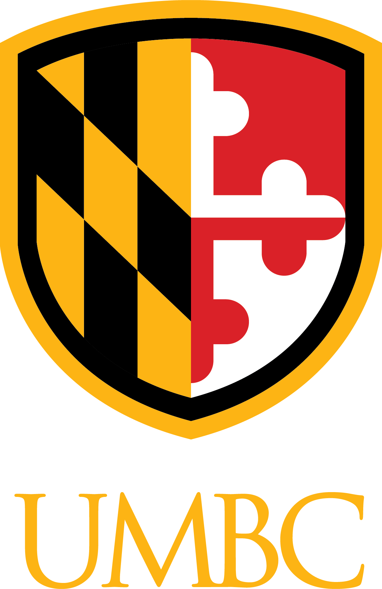

About Me
Hello! I'm Olivia Kaniecki, a senior undergraduate student studying Computer Science with a concentration in AI and Machine Learning at University of Maryland, Baltimore County.
I have experience in AI model development, large-scale data anlysis, and enterprise software solutions. I am also currently interested and learning full-stack development to further my skillset and tools.
I'm currently seeking an entry level position as a Software Engineer (Front-End, Back-end, Full-Stack) to expand expertise.
Technical Skills
- Python
- Pandas
- NumPy
- Scikit-Learn
- PyTorch
- Keras
- C & C++
- HTML5, CSS3, Javascript
- JSON
- Git/Github
Professional Skills & Tools
- VSCode
- Agile Methodologies (Scrum, Kanban)
- Confluence
- Jira
- Microsoft Office Suite (Word, PowerPoint, Excel, Teams)
Experience

Software Engineer Intern - Lockheed Martin Space
June 2025 - Present
- Designed and implemented a telemetry parser architecture that significantly reduced troubleshooting time and enabled analysis of 300k+ data instances.
- Evaluated AI systems within an enterprise-scale codebase, improving unit testing coverage and engineering prompts that enhanced test accuracy and maintainability.
- Developed and delivered an AI-assisted unit test generation demo to a 50+ member engineering team, driving interest in integrating automated testing into the development pipeline.

Teaching Fellow - CMSC341 Data Structures, UMBC
August 2025 - Present
- Provided in-person and virtual office hours to support students with coursework, specializing in C++ debugging and project development.
- Applied grade rubrics to evaluate programming projects, ensuring code quality, correctness, and adherence to software engineering principles.
- Reviewed assignments and exams to assess algorithmic design, code efficiency, and implementation accuracy.
Team Member - AI4ALL Ignite Program
Project: Saliency-Enhanced Facial Recognition Model for Improved Accuracy
August 2024 - December 2024
- Designed and implemented a deep learning model using Convolution Neural Networks (CNNs) and saliency maps to enhance the interpretability and accuracy of facial recognition systems.
- Trained and evaluted models using the Labeled Faces in the Wild (LFW) dataset (around 13k images), improving recognition accuracy.
- Presented findings to peers, program mentors, and industry experts, emphasizing the importance of model transparency and ethical AI in computer vision applications.
Learning Assistant - PHYS122 Introduction to Physics II, UMBC
August 2024 - March 2025
- Facilitated active learning and conceptual understanding of complex course materual through structured group discussions consisting of 30+ students met twice weekly.
- Collaborated with professors, graduate students, and fellow LAs to develop effective instructional strategies tailored to student needs.
- Evaluated and graded assignments and exams for 100+ students, providing feedback to support academic growth and mastery of course material.
Contact
Connect with me on Linkedin
Email: olivialkaniecki@gmail.com